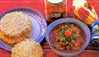

Uncommon Corn
About 1,500 B.C., cooks in coastal Guatemala figured out that cooking dried corn in alkali water removed the kernels' skins and produced a softer dough than unprocessed ground corn.
More recently, food scientists have found that this process, called nixtamalization, increases the bioavailability of both protein and niacin, and radically reduces the toxins often found in moldy corn. The resulting dough, called masa, is the basis for corn tortillas, chips, tamales and other specialty corn foods. Whole corn that has been nixtamalized is called hominy or posole, while the ground form is called masa.
Whether ground or whole, nixtamalized corn "has a taste and aroma like no other food on Earth-a delicately nutty quality combined with something almost chalky and mineral-like," says Zarela Martinez, owner of Zarela restaurant in New York City and author of The Food and Life of Oaxaca . She shared the following recipe for nixtamalizing your own corn:
Nixtamalized Corn
2 pounds clean, dried flour-corn kernels (about 1 quart)
1/4 cup pickling lime (food-grade calcium hydroxide)
3 quarts water
Rinse the corn in a colander and set aside. In a large, stainless steel (nonreactive) pot, dissolve the lime in the water. Immediately wash off any lime that gets on your hands. Add the corn and discard any floating kernels. Bring to a boil over high heat. Reduce the heat to low, and cook uncovered for 15 minutes. Turn off the heat, cool the pot and let it sit, uncovered, for 4 hours at room temperature or overnight in the refrigerator. Pour the corn into a colander in the sink. With the cold water running, rub the kernels between your hands to rub away the softened hulls (they will have a gelatinous texture). Rinse thoroughly (some old recipes say to wash between 4 and 11 times). Drain well. Use the whole, moist kernels in soups or stews. Or, grind them through a food mill able to handle moist kernels to make masa, to which you can add enough water to make a slightly sticky dough for making tamales or, using a tortilla press, tortillas. Promptly refrigerate any unused masa, and use it within 3 days.
Mother Earth News
|
 These homemade tortillas start with a dough made from whole-grain corn masa that is shaped and then cooked like a pancake on a griddle. Homemade salsa makes a great accompaniment. |
|
|